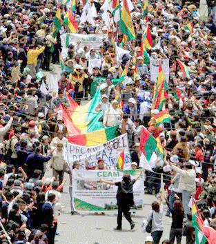
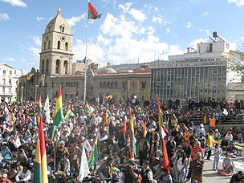

BOLIVIA: INDÍGENAS MARCHAN 65 DÍAS
NO HABRÁ CARRETERA EN TIPNIS
Llenos de emoción, recibieron los paceños a sus héroes que caminaron para defender su casa, el TIPNIS.
Emocionante. Espectacular. Impresionante. Singular. Éstas son algunas de las calificativas que los periodistas utilizaron para describir la escena en la Plaza Morillo de La Paz el 20 de octubre. El espacio se llenó con centenares de miles de bolivianos cuyo propósito era recibir y felicitar a sus 3000 compatriotas indígenas que habían marchado 570 kilómetros durante 65 días para llegar a la capital en defensa de su territorio. Específicamente, su meta era parar la construcción de una carretera que hubiera dividido el Territorio Indígena Parque Nacional Isiboro Sécure, el TIPNIS. Lograron su propósito, a pesar de la feroz campaña gubernamental cuyo propósito era desprestigiar a los marchistas indígenas. Por fin, Evo Morales accedió a la exigencia, pero su falta de entusiasmo fue notoria. El Jefe de Estado boliviano anunció la decisión en rueda de prensa el día de la llegada de los marchistas.
El por qué de la marcha
Como Ecuador, Bolivia tiene una nueva Constitución que declara al Estado de carácter “Plurinacional”. En el caso de Bolivia, esto significa que el Estado tiene que garantizar los derechos de los Araonas, Pacahuanas, Chacobos, Yaminawas, Cayubabas, Canichanas, Ese Ejjas, Machineri, Moré, T’simanes, Sirioni, Móyo, Yuke, Ayoreos, Totomonas y otros pueblos que habitan el territorio nacional. Sin embargo, y a pesar de tener como jefe de Estado un indígena, al entrar en conflicto los derechos de estos pueblos y los del mundo moderno, los habitantes más privilegiados de este último suelen imponer su voluntad.
Esto es lo que iba a pasar en TIPNIS. La nueva carretera hubiera servido a los extractores, los madereros, los comerciantes, los interesados en explotar la tierra, que no la conciben como madre u hogar, sino como espacio útil para enriquecerse, según el analista Pablo Cingolani. Y añade: “Se habla mucho de la devastación del TIPNIS, del holocausto de la naturaleza, de los monstruos de metal que derribarán los árboles y los nidos, las guaridas y las estepas en que se desliza silencioso el jaguar, de la pérdida irreversible de cientos de especies, de la profanación de la selva en la que aún fluyen los ríos cristalinos del agua clara”. Pero mientras todo esto es nada más que palabras para los extractores, para los indígenas “que resguardan las puertas de este palacio natural”, el TIPNIS es “la Casa Grande”, su hogar.
El último tramo
Es por esta razón que la marcha arrancó en agosto. Durante los 65 días que duró, tres personas, dos niños y un adulto, murieron. Los marchistas sufrieron violenta represión en Chaparina. Día y noche soportaron las inclemencias del clima. Y, para colmo, soportaron también una campaña vergonzosa de desprestigio de parte del Gobierno cuyo Jefe, el indígena Evo Morales, optó por defender los derechos de las empresas extractivistas en vez de los de sus pueblos hermanos.
El 19 de octubre, los 3000 indígenas pasaron una noche frígida en las cercanías de Urujara, donde la temperatura bajó a dos grados centígrados. Estaban a tan sólo 12 kilómetros de la Plaza Murillo de La Paz. El día siguiente, según El Diario, rotativo paceño: “Desde muy temprano recogieron sus carpas y se alistaron para iniciar su último recorrido rumbo al Palacio de Gobierno y, posteriormente, la histórica plaza de San Francisco, con la firme decisión de conseguir la suspensión definitiva de la construcción de la carretera que amenaza con dividir ‘su hogar’, como ellos lo llaman”. Antes de arrancar, el obispo de El Alto, monseñor Jesús Juárez, les dio la bendición a los marchistas.
Centenares de miles de paceños reciben a los marchistas
Al llegar a las afueras de La Paz, les esperaron los primeros pobladores de la capital con carteles que llevaban mensajes como “El TIPNIS es vida”, “Ni soya, ni coca, el TIPNIS no se toca” y “El TIPNIS se respeta”. Luego, “entre aplausos, lágrimas, abrazos”, la población creyó un cordón humano en todo su recorrido hasta la Plaza Murillo y San Francisco. Había centenares de miles de personas en las calles.
“Estoy llenando de mixtura y flores a los marchistas porque es así cómo se recibe a los héroes y ellos lo son al haber estado más de dos meses caminando para defender su casa. Esto hay que valorarlo y estamos aquí para decirles que no están solos y que lucharemos juntos”, dijo Luz Camacho.
La marcha llegó a la Plaza Murillo pasado las dos de la tarde, después de que el presidente Morales aceptara retirar los carros antidisturbios que se habían puesto en los alrededores del Palacio de Gobierno.
Luego, a las tres de la tarde, en la Plaza San Francisco, les esperaban monseñor Juárez, cinco sacerdotes y una multitud de paceños. Fernando Vargas, presidente de la Subcentral del TIPNIS, con lágrimas en los ojos, dijo: “Me siento emocionado por esta bienvenida y además porque estoy defendiendo la naturaleza. Gracias a los paceños. Realmente no esperábamos este recibimiento”.
Y, ¿el Gobierno de Evo?
Según el diario Los Tiempos de La Paz: “Los marchistas decían que esperaban ver al presidente Evo Morales salir al menos al balcón del edificio presidencial. Pero previamente, en la mañana, el ministro de Comunicación, Iván Canelas, había informado que nadie del Gobierno recibiría a los indígenas”.
“Evo se había fugado” rezaron algunos titulares el día siguiente. En efecto, el presidente Morales no recibió a los miles de marchistas en el Palacio de Gobierno, como había prometido, sino tan sólo a 20 dirigentes en la vicepresidencia. Como consecuencia, los diputados indígenas anunciaron que rompen con El MAS, partido de Gobierno, según el diputado Pedro Nuni. Los organizadores de la marcha afirman: “El gobierno sigue con mentiras, agresividad y maniobras. Desde la noche bloqueó a una vigilia de marchistas que quedó en Plaza Murillo. La Plaza amaneció con un fuerte cordón policial cortando todas las calles”. La decepción con la actitud del Jefe de Estado fue generalizada. Según los reporteros, la muchedumbre cantaba consignas como éstas: “¡Evo decía que todo cambiaría y ahora la misma porquería!” y “¡Todos somos TIPNIS!”
Sin embargo, el presidente Morales accedió a la demanda de los marchistas: devolvió a la Asamblea Legislativa una norma que había sancionada que, por un lado garantizaba la consulta previa a los pueblos indígenas afectados por la carretera propuesta, pero, por otro, viabilizaba la construcción de la obra, denominada la carretera Villa Tunanri-San Ignacio de Moxos. El Jefe de Estado dijo que el TIPNIS será declarado “zona intangible” a fin de salvaguardarlo de cualquiera actividad que represente un riesgo para los pueblos indígenas bolivianos.
Fuentes: “La reserva del TIPNIS. La reserva del hogar, de la memoria”, Richard Trewhella Fernández, Más, 17 de octubre de 2011; “Bloqueados y castigados. Indígenas frente a cerco policial: ‘queremos agua, queremos agua’”, ERBOL, periódico digital, http://www.erbol.com.bo/noticia.php?identificador=2147483949814, 20 de septiembre de 2011; “Morales dice que carretera no pasará por el TIPNIS y da por cerrado el tema”, ERBOL, periódico digital, 20 de octubre de 2011; “Marchistas del TIPNIS recibidos como héroes”, El Diario, La Paz, 21 de octubre de 2011; “Masiva y emotiva bienvenida a indígenas”, Gary Rojas, Los Tiempos, La Paz, 20 de octubre de 2011.